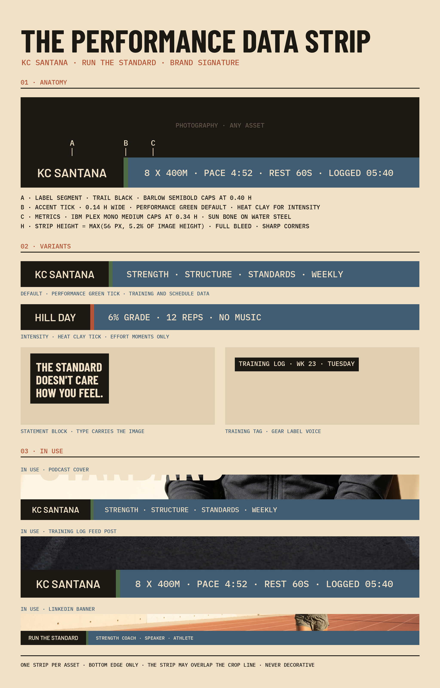

Data strip · Default signature
Data strip
Thin full-width band on the bottom edge of the asset. Trail Black label, Performance Green tick, IBM Plex Mono metrics on Water Steel. The tick turns Heat Clay when the content is effort or intensity.
The brand's most recognizable visual element. Used consistently across every surface. Never decorative.
The inspected raster board is the source for behavior. Notes below name the use cases without replacing the source image with coded demos.

Thin full-width band on the bottom edge of the asset. Trail Black label, Performance Green tick, IBM Plex Mono metrics on Water Steel. The tick turns Heat Clay when the content is effort or intensity.
Trail Black panel with Sun Bone Barlow Condensed caps, maximum three lines. Carries the standard as a command when type has to do the work.
Small gear-label box in IBM Plex Mono caps. Tags the asset like equipment: log, week, day. One tag per asset, never a replacement for the strip.
Cover the logo. A thin Water Steel band on the bottom edge with a Trail Black label, one accent tick, and mono metrics in caps should still read as KC Santana before any name appears.
The construction reference. How to draw it, weight it, place it.
The signature is a thin performance data strip on the bottom edge of an asset. It reads like equipment labeling: a Trail Black label, one accent tick, and mono metrics on a Water Steel band. One strip per asset. Never decorative.
h = max(56px, 5.2% of image height).#1B1712 rectangle anchored to the left edge.#F1E2C7, size 0.40 x h, vertically centered.0.55 x h on both sides of the label text.KC SANTANA, RUN THE STANDARD, HILL DAY, TODAY.0.14 x h wide, full strip height.#4E6B46 is the default.#B55336 only when the content is effort or intensity: hill days, no-excuses statements, event pushes.#405C73 for the remainder of the strip.0.34 x h, starting 0.55 x h after the tick. · . No commas, no slashes, no dashes.0.55 x h of right padding. Never wrap to a second line.8 X 400M · PACE 4:52 · REST 60S, WAKE 05:30 · LIFT 06:15.PACE 4:52, not ABOUT 5.TRAINING LOG · WK 23 · TUESDAY.